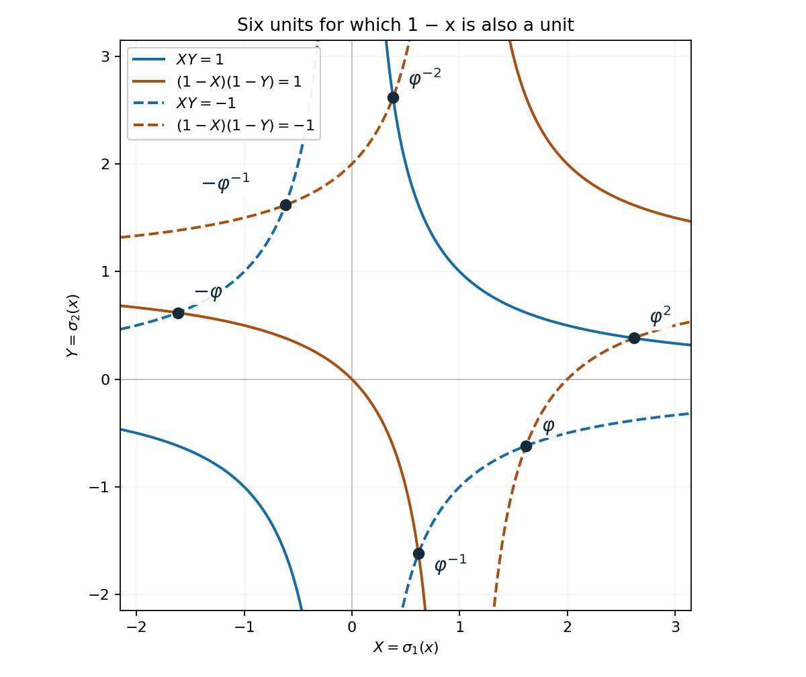

From many logarithms to two, and the unit equation
Authoring and mathematical self-check: OpenAI Codex — GPT-6 Astra, Ultra. Original exposition, CC0.
The coefficient normalization in Theorem 7.1 has an application beyond two fixed bases. We can replace a long logarithmic sum by a two-term sum whose bases vary in a controlled way. One base becomes more complicated as the common multiplier decreases; the other becomes less complicated. The product of their height bounds is what matters.
The free paper of Bilu and Bugeaud, Section 2 gives the geometric reduction underlying this argument. We give all the rounding estimates and an explicit, deliberately generous constant. The arithmetic inputs are the height inequalities in Heights of algebraic numbers, Proposition 2.5 and Theorem 2.8, already used in Lesson 1. The analytic input is our proved Theorem 7.1, including its allowance for arbitrary complex logarithms and multiplicative dependence.
Prerequisite proofs
The following programme lessons provide the inputs used here.
| Input | Exact proof locator |
|---|---|
| Mahler measure, height inequalities, Northcott, height zero and one-place estimates | Heights of algebraic numbers, Theorems 2.4 and 2.6–2.8, Proposition 2.5 |
| Integer subgroup bases, saturation and integral bases | Discriminants and integral bases, Integer subgroups and lattice indices; Theorem 2.3 |
| Ideal norms and the norm of a principal ideal | Norms, class groups and modules over Dedekind domains, Proposition 4.1 |
| Discrete subgroups and the compact Minkowski theorem | Lattices, Minkowski's theorem and the Minkowski embedding, lattice structure lemma and Theorem 7.1 |
| Dirichlet's theorem, the regulator and the \(S\)-unit rank | Dirichlet's unit theorem, Results 9.2–9.4 |
| Complex logarithm branches and the two-logarithm estimate | Lesson 1, Lemmas 1.1–1.2; Lesson 7, Theorem 7.1 |
1. A common multiplier with small integral remainders
Lemma 12.1. Let \(b_1,\ldots,b_n\) be integers, where \(n\ge1\), and let \(N\ge Q\ge1\) be integers. There are integers \(r,p_1,\ldots,p_n\) such that \[ 1\le\left\lfloor\frac NQ\right\rfloor\le r\le N, \qquad |b_i-rp_i|\le rQ^{-1/n}+\frac{|b_i|}{2r-1} \quad(1\le i\le n). \tag{12.1} \]
Proof. First suppose \(Q>1\). In \(\mathbb R^{n+1}\), consider the closed region \[ |t|\le Q,\qquad \left|\frac{tb_i}{N}-x_i\right|\le Q^{-1/n} \quad(1\le i\le n). \tag{12.2} \] It is compact, convex and symmetric about zero. The shear \((t,x_1,\ldots,x_n)\mapsto(t,x_1-tb_1/N,\ldots,x_n-tb_n/N)\) has determinant one, so its volume is \(2Q(2Q^{-1/n})^n=2^{n+1}\). The compact boundary case of Minkowski's theorem, Number fields, Theorem 7.1 therefore supplies a nonzero integer point \((p_0,p_1,\ldots,p_n)\). If \(p_0=0\), then every \(|p_i|\le Q^{-1/n}<1\), forcing that point to be zero. Changing all signs if needed, we may take \(1\le p_0\le Q\).
Choose \(r\) to be a nearest integer to \(t=N/p_0\). Since \(1\le N/Q\le t\le N\), we have \(\lfloor N/Q\rfloor\le r\le N\), and \(|t-r|\le1/2\). For each coordinate, \[ \begin{aligned} |b_i-rp_i| &\le r\left|\frac{b_i}{t}-p_i\right| +|b_i|\frac{|t-r|}{t}\\ &\le rQ^{-1/n}+\frac{|b_i|/2}{r-1/2}. \end{aligned} \] This is (12.1). For \(Q=1\), take \(r=N\) and choose each \(p_i\) nearest to \(b_i/N\); then \(|b_i-Np_i|\le N/2\le N\), which is even stronger. This also treats every sign and zero coordinate. \(\square\)
When \(N\) is a multiple of \(Q\), the lower bound is exactly \(r\ge N/Q\). That integrality will keep the later parameter choice valid at its endpoints.
For a concrete calculation, take \((b_1,b_2,b_3)=(1001,-997,2503)\), \(N=64\) and \(Q=27\). The choice \(p_0=2\) and \((p_1,p_2,p_3)=(31,-31,78)\) gives approximation errors \((9/32,-5/32,7/32)\), all of absolute value below \(1/3\). Here \(r=32\), and the exact remainder vector is \((9,-5,7)\). Thus a long exponent vector is an integral multiple of another vector, plus a remainder whose size is explicitly controlled.
2. The additive estimate with explicit constants
Theorem 12.2. Let \(K\subset\mathbb C\) have degree \(D\). Let \(\alpha_1,\ldots,\alpha_n,\eta\in K^*\), and choose any logarithms \(\ell_1,\ldots,\ell_n,\ell_0\) of these numbers. Choose real numbers \[ A_i\ge\max\{Dh(\alpha_i),|\ell_i|,1\},\qquad A_0\ge\max\{Dh(\eta),|\ell_0|,1\}. \tag{12.3} \] Let \(b_1,\ldots,b_n\) be integers, not all zero, put \(B=\max_i|b_i|\ge1\), and assume, for a given \(\varepsilon>0\), \[ 0<|\Lambda|<e^{-\varepsilon B},\qquad \Lambda=\sum_{i=1}^n b_i\ell_i+\ell_0. \tag{12.4} \] Define \[ S=\sum_{i=1}^n A_i,\quad C=64800D^2S(2S+1),\quad q=\left\lceil\max\left\{2, \left(\frac{200C}{\varepsilon}\right)^2\right\}\right\rceil. \tag{12.5} \] Then \[ B<4q^{2n+1}A_0. \tag{12.6} \] The constant multiplying \(A_0\) depends only on the fixed logarithms, their height bounds, \(D,n,\varepsilon\). In particular it does not depend on the height or branch of the varying last logarithm.
Proof. Suppose instead that \(B\ge4q^{2n+1}A_0\). Set \[ Q=q^n,\qquad T=\left\lceil\max\{\sqrt{Bq},A_0q\}\right\rceil,\qquad N=QT. \tag{12.7} \] We check \(Q\le N\le B\) before using Lemma 12.1. Our assumption gives \[ Q\sqrt{Bq}\le B/2,\qquad QA_0q\le B/(4Q)\le B/2,\qquad Q\le B/2. \] Since a ceiling adds at most one, \(N\le B/2+Q\le B\). The lemma provides \(r\ge N/Q=T\) and \(r\le N\le B\). Thus \[ \frac B{r^2}\le\frac1q,\qquad A_0\le\frac rq. \tag{12.8} \] Let \(c_i=b_i-rp_i\). Formula (12.1) implies \[ |c_i|\le\frac rq+\frac Br\le\frac{2r}{q},\qquad |p_i|\le\frac Br+\frac2q\le\frac{2B}{r}. \tag{12.9} \] The last inequality uses \(q\ge2\) and \(r\le B\).
Define two algebraic numbers in the same field, together with specified logarithms: \[ \begin{aligned} \alpha&=\prod_i\alpha_i^{p_i},& L_\alpha&=\sum_i p_i\ell_i,\\ \gamma&=\eta\prod_i\alpha_i^{c_i},& L_\gamma&=\ell_0+\sum_i c_i\ell_i. \end{aligned} \tag{12.10} \] Then \(\Lambda=rL_\alpha+L_\gamma\) exactly. The height product inequality and the triangle inequality, with (12.3), give \[ \begin{aligned} \max\{Dh(\alpha),|L_\alpha|,1\}&\le A:=\frac{3SB}{r},\\ \max\{Dh(\gamma),|L_\gamma|,1\}&\le G:=(2S+1)\frac rq. \end{aligned} \tag{12.11} \] Indeed the nonconstant entries of the first maximum are at most \(2SB/r\), while \(A\ge3\). Those of the second are at most \(A_0+2Sr/q\le(2S+1)r/q\), and \(r/q\ge A_0\ge1\).
Let \(D_0=[\mathbb Q(\alpha,\gamma):\mathbb Q]\le D\). Apply Theorem 7.1 with \(a_1=A/D_0\), \(a_2=G/D_0\) and coefficients \(r,1\). These are admissible: (12.11) bounds both the heights and the actual chosen logarithms, and \(D_0\le D\). Neither independence nor principal branches are needed. The nonvanishing hypothesis is exactly (12.4). The normalized coefficient is \[ B'=\frac rG+\frac1A =\frac q{2S+1}+\frac r{3SB}\le q+1. \tag{12.12} \] Consequently \[ \begin{aligned} \log|\Lambda| &\ge-21600D_0^2AG\,[\max\{10,\log(q+1)\}]^2\\ &\ge-C\frac Bq[\max\{10,\log(q+1)\}]^2. \end{aligned} \tag{12.13} \] This retains both occurrences of the varying heights in Theorem 7.1: the height product and the denominator of \(B'\).
For \(q\ge1\), integration gives \(\log q\le4(q^{1/4}-1)\). Hence \(\log(q+1)\le\log2+\log q<4q^{1/4}\), and \[ [\max\{10,\log(q+1)\}]^2\le100\sqrt q. \] The choice (12.5) therefore makes the right side of (12.13) at least \(-100CB/\sqrt q\ge-\varepsilon B/2\), contrary to (12.4). This proves (12.6). \(\square\)
The argument includes vanishing coefficients and bases that equal one. It only requires that the entire form be nonzero. If a constructed base equals one, its displayed logarithm can be a nonzero period; it must not be replaced silently by zero.
3. Passing back to a multiplicative expression
Corollary 12.3. Fix nonzero \(\alpha_1,\ldots,\alpha_n\in K\), where \([K:\mathbb Q]=D\), an embedding \(K\hookrightarrow\mathbb C\), and \(\delta>0\). There is an explicitly computable constant \(C_*\), depending only on these fixed data, such that every \(\eta\in K^*\) and every integer vector \(b\ne0\) satisfying \[ 0<\left|\eta\prod_i\alpha_i^{b_i}-1\right|<e^{-\delta B}, \qquad B=\max_i|b_i|, \tag{12.14} \] obey \[ B<C_*\max\{h(\eta),1\}. \tag{12.15} \] One explicit choice is as follows. Put \[ \begin{gathered} m=n+1,\qquad \varepsilon=\frac\delta{2(n+2)},\\ S=\sum_{i=1}^n(Dh(\alpha_i)+\pi+1)+(\pi+1),\\ C=64800D^2S(2S+1),\qquad q=\left\lceil\max\{2,(200C/\varepsilon)^2\}\right\rceil,\\ C_*=\frac2\delta+4(D+\pi+1)q^{2n+3}. \end{gathered} \tag{12.16} \]
Proof. Write \(H=\max\{h(\eta),1\}\). If \(B<2/\delta\), the conclusion is immediate. Otherwise set \(z=\eta\prod_i\alpha_i^{b_i}\) and \(\Lambda=\operatorname{Log}z\), using the branch near one. By Lemma 1.1 and (12.14), \[ 0<|\Lambda|<2e^{-\delta B}\le e^{-\delta B/2}. \tag{12.17} \] Nonvanishing follows from \(z\ne1\). The branch correction proved in Lemma 1.2, now including the coefficient-one factor \(\eta\), gives an even integer \(b_0\) with \[ \Lambda=b_0\log(-1)+\sum_i b_i\operatorname{Log}\alpha_i +\operatorname{Log}\eta, \qquad |b_0|\le nB+2. \tag{12.18} \] Here \(\log(-1)=\pi i\). Thus \(B_*:=\max\{B,|b_0|\}\le(n+2)B\), and (12.17) implies \(|\Lambda|<e^{-\varepsilon B_*}\).
The height inequality at the chosen embedding, applied also to the inverse, gives \( |\log|u||\le Dh(u)\) for \(u\in K^*\). Therefore its principal logarithm satisfies \(|\operatorname{Log}u|\le Dh(u)+\pi\). Use Theorem 12.2 for the \(m=n+1\) fixed bases \(\alpha_1,\ldots,\alpha_n,-1\), with the heights contributing to \(S\) in (12.16), and use \(A_0=Dh(\eta)+\pi+1\le(D+\pi+1)H\). Its coefficient vector is not zero, and zero entries such as \(b_0=0\) are permitted. We obtain \[ B\le B_*<4q^{2m+1}A_0 \le4(D+\pi+1)q^{2n+3}H<C_*H. \] This proves the result for arbitrary complex bases. \(\square\)
4. Effective control of a fundamental system
Write \(d=[K:\mathbb Q]\), \(\Delta=|\operatorname{disc}K|\), \(m=r_1+r_2\) and \(r=m-1\). At an infinite place let \(n_v=1\) for a real embedding and \(n_v=2\) for a conjugate pair. For nonzero \(u\in K\), use the logarithm vector \[ \lambda(u)=(n_v\log|\sigma_vu|)_v,\qquad \mathcal H=\{z\in\mathbb R^m:\ \textstyle\sum_v z_v=0\}. \tag{12.19} \] The Dirichlet unit theorem, Number fields, Theorem 9.2 proves that \(\lambda(O_K^\times)\) is a full lattice in \(\mathcal H\); its kernel is the finite group \(\mu_K\) of roots of unity. The same lesson's Proposition 9.3 identifies each deleted-coordinate determinant with the regulator. For a unit, the height formula is \[ d h(u)=\sum_v\max\{0,\lambda(u)_v\} =\frac12\sum_v|\lambda(u)_v|. \tag{12.20} \] The finite places contribute zero, and the infinite logarithms sum to zero.
We need more than the existence of a fundamental system: its heights and the conversion from height to exponent size must be controlled uniformly by \(d,\Delta\). We prove such a statement with generous elementary constants. This provides all the quantitative unit input used below.
Lemma 12.4 (a short basis). If a Euclidean lattice \(L\) of rank \(r\ge1\) contains \(r\) linearly independent vectors of length at most \(U\), it has an integral basis whose vectors have length at most \((r+1)U/2\).
Proof. Induct on \(r\). For \(r=1\), a generator is no longer than any nonzero lattice vector. In higher rank choose a shortest nonzero vector \(b_1\), so \(\|b_1\|\le U\). It is primitive: a proper integral multiple would not be shortest. A primitive vector extends to a lattice basis. Indeed its coordinates in any basis have greatest common divisor one, and the integer Euclidean algorithm changes those coordinates to \((1,0,\ldots,0)\) by invertible integer operations.
Orthogonal projection onto \(b_1^\perp\) sends a basis extending \(b_1\) to \(r-1\) independent vectors. Thus its image \(L'\) is a lattice, with kernel \(\mathbb Zb_1\). The projections of the given short vectors span \(b_1^\perp\), so \(L'\) contains \(r-1\) independent vectors of length at most \(U\). Induction gives a basis of \(L'\) of length at most \(rU/2\). Lift these vectors to \(L\), and subtract integer multiples of \(b_1\) so that each component along \(b_1\) has length at most \(\|b_1\|/2\). Each lift then has length at most \(rU/2+U/2\), by the triangle inequality. Together with \(b_1\) the lifts form an integral basis, because their images form a basis of \(L'\) and the kernel is \(\mathbb Zb_1\). \(\square\)
Lemma 12.5 (uniform fundamental units and exponent control). Define positive integers depending only on \(d,\Delta\): \[ \begin{gathered} C=2\Delta,\qquad J=C^{d(d^2+1)},\qquad V=8d^5CJ,\\ P=d^2(2\cdot3^d+1)^d,\qquad L=d\,d!\,V^d(2d^2P)^d. \end{gathered} \tag{12.21} \] If \(r\ge1\), there is a fundamental system \(\varepsilon_1,\ldots,\varepsilon_r\) with \[ h(\varepsilon_i)\le V,\qquad \max_i|b_i|\le Lh(u) \quad\text{when }\ u=\zeta\prod_{i=1}^r\varepsilon_i^{b_i},\quad \zeta\in\mu_K. \tag{12.22} \] For \(r=0\), every unit is a root of unity and has height zero.
Proof. We first produce \(r\) independent units of bounded size. For every \(x\in\mathcal H\), apply Minkowski's theorem to the product of real intervals and complex discs specified by \[ |\sigma_v a|^{n_v}\le Ce^{x_v}. \] Its volume is \(2^{r_1}\pi^{r_2}C^m\), while \(2^d\operatorname{covol}(O_K)=2^{r_1+r_2}\sqrt\Delta\). Since \(C=2\Delta\) and \(\Delta\ge1\), the first quantity is at least the second. The programme proof of the Minkowski embedding gives a nonzero \(a\in O_K\) in this region. Thus \[ 1\le |N_{K/\mathbb Q}a|\le C^m\le C^d,\qquad -(m-1)\log C\le\lambda(a)_v-x_v\le\log C. \tag{12.23} \] For the lower inequality, subtract the upper bounds for all other coordinates from \(\sum_v\lambda(a)_v=\log|Na|\ge0\).
There are at most \(J\) integral ideals of norm at most \(C^d\). Here is a count that does not presuppose a regulator estimate. An index-\(k\) subgroup \(A\) of \(\mathbb Z^d\) contains \(k\mathbb Z^d\), since every element of its order-\(k\) quotient is killed by \(k\). The subgroup theorem gives \(A\) a basis of \(d\) vectors, so its image in \((\mathbb Z/k\mathbb Z)^d\) is generated by at most \(d\) elements. There are at most \(k^{d^2}\) ordered choices of these generators, which bounds the number of possible subgroups. Integral ideals are among these additive subgroups. Summing for \(1\le k\le C^d\) gives at most \((C^d)^{d^2+1}=J\). The subgroup theorem and the identity between ideal norm and additive index were proved in Number fields, Discriminants and integral bases and Proposition 4.1 of Norms, class groups, and modules over Dedekind domains.
Put \(T=4d^2C\). For each \(i\le r\), let \(v_i\in\mathcal H\) have entry \(r\) at position \(i\) and entry \(-1\) elsewhere. Apply (12.23) at the \(J+1\) targets \(kTv_i\), \(0\le k\le J\). Two resulting principal ideals coincide. If their indices are \(k>\ell\), their generator ratio \(u_i=a_k/a_\ell\) is a unit and \[ \lambda(u_i)=(k-\ell)Tv_i+e_i,\qquad 1\le k-\ell\le J,\qquad |e_{i,v}|\le 2dC. \tag{12.24} \] The last bound follows from (12.23) and \(\log C\le C\). Every coordinate except \(i\) is strictly negative. Since the sum is zero, the \(i\)-th coordinate is positive. The matrix whose rows are the first \(r\) coordinates of the \(\lambda(u_i)\) is strictly diagonally dominant: its positive diagonal entry is the sum of the absolute values of all the other coordinates, including the omitted strictly negative last coordinate. If this matrix killed a nonzero vector, a coordinate of maximum absolute value would contradict strict diagonal dominance. The \(r\) logarithm vectors are independent.
Their lengths are at most \[ \sqrt m\,(JTr+2dC)\le 8d^4CJ=:U. \tag{12.25} \] Lemma 12.4 supplies a basis of the full unit lattice with lengths at most \((r+1)U/2\le dU=V\). Lift that basis to units \(\varepsilon_i\). These are fundamental, not merely independent: the logarithm of every unit is an integral combination of the chosen basis, and the residual unit is in \(\mu_K\). By (12.20) and Cauchy--Schwarz, \(h(\varepsilon_i)\le\sqrt m\,V/(2d)\le V\).
We next bound the inverse logarithm matrix. A small, explicit height gap will suffice. There are at most \(P\) algebraic numbers of degree at most \(d\) which are algebraic integers and have every conjugate of modulus at most \(2\). Indeed their monic minimal polynomials have degree \(e\le d\), and each coefficient has absolute value at most \(\binom e j2^j\le3^d\). There are at most \(d(2\cdot3^d+1)^d\) such polynomials and at most \(d\) roots per polynomial.
If a unit \(u\) satisfied \(h(u)\le\log2/(dP)\), all \(P+1\) powers \(1,u,\ldots,u^P\) would have every conjugate of modulus at most \(\exp(dP h(u))\le2\). Two would agree, making \(u\) a root of unity. Consequently every non-torsion unit satisfies \[ h(u)>\frac{\log2}{dP}. \tag{12.26} \] This is a finite coefficient-box argument, not an ineffective appeal to a minimum over unknown units.
Delete the last coordinate from the unit lattice, obtaining \(\overline L\subset\mathbb R^r\). If \(z\in\overline L\setminus\{0\}\) comes from \(u\), equations (12.20) and (12.26) imply \[ \|\lambda(u)\|_2\ge \frac{2dh(u)}{\sqrt m}> \frac{2\log2}{P\sqrt m},\qquad \|\lambda(u)\|_2\le\sqrt m\,\|z\|_2. \] Thus \(\|z\|_2>2\log2/(dP)\). Set \(a=(2d^2P)^{-1}\). Every vector in the cube \([-a,a]^r\) has length at most \(\sqrt r\,a<2\log2/(dP)\). There is no nonzero lattice point in this compact cube. The compact version of Minkowski's theorem, by contraposition, gives \[ \det\overline L>a^r. \tag{12.27} \] Here \(\log2>1/2\), for example by integrating \(1/t>1/2\) over \(1\le t<2\).
Let \(E\) have columns given by the deleted-coordinate logarithms of the fundamental units. Its entries have absolute value at most \(V\) and \(|\det E|>a^r\). The determinant expansion bounds every cofactor by \((r-1)!V^{r-1}\); when \(r=1\) the empty cofactor is one. Hence each row sum of absolute values of \(E^{-1}\) is at most \(r!V^{r-1}a^{-r}\). For a unit \(u\), each coordinate of \(\lambda(u)\) has absolute value at most \(dh(u)\), by (12.20). Solving \(Eb=\overline{\lambda(u)}\) yields \[ \max_i|b_i| \le d\,r!\,V^{r-1}(2d^2P)^r h(u)\le Lh(u). \tag{12.28} \] The final inequality uses \(r\le d-1\), \(V\ge1\) and \(2d^2P\ge1\). The rank-zero assertion is the rank-zero case of Dirichlet's theorem. \(\square\)
The estimates depend only on degree and discriminant. For the related regulator-based treatment of fundamental systems, see the free paper of Bugeaud and Győry, Lemma 1. Its \(h\) denotes multiplicative height, so its \(\log h\) corresponds to our \(h\). The quantitative input to the next proof is Lemma 12.5.
5. The effective unit equation
Theorem 12.6. Let \(K\) have degree \(d\) and absolute discriminant \(\Delta\), and let \(\alpha,\beta\in K^*\). Every solution \[ \alpha x+\beta y=1,\qquad x,y\in O_K^\times \tag{12.29} \] satisfies \[ \max\{h(x),h(y)\}\le C_{\rm unit}(d,\Delta) \max\{h(\alpha),h(\beta),1\}, \tag{12.30} \] where the following is one fully explicit choice. With \(V,L\) from (12.21), put \[ \begin{gathered} S_0=d(dV+5)+5,\qquad C_0=64800d^2S_0(2S_0+1),\\ q_0=\bigl(1600C_0L(d+1)\bigr)^2,\\ A=8L+4(d+5)q_0^{\,2d+1},\qquad C_{\rm unit}(d,\Delta)=dVA+4d+3. \end{gathered} \tag{12.31} \] In particular there are finitely many solutions, and an exhaustive search can be bounded effectively.
Proof. Write \(H=\max\{h(\alpha),h(\beta),1\}\). If \(r=0\), both unknowns have height zero, so the assertion holds. Otherwise fix the fundamental system of Lemma 12.5. Interchange the pairs \((\alpha,x)\), \((\beta,y)\) if necessary to arrange \(h(x)\ge h(y)\). The height inequalities, including \(h(a+b)\le h(a)+h(b)+\log2\), give \[ h(x)=h\bigl(\alpha^{-1}(1-\beta y)\bigr) \le h(y)+h(\alpha)+h(\beta)+\log2<h(y)+3H. \tag{12.32} \] These inequalities follow place by place from the ultrametric or ordinary triangle inequality and were proved in Heights of algebraic numbers, Proposition 2.5.
If \(h(x)\le4dH\), (12.30) follows at once. Assume \(h(x)>4dH\). The negative coordinates of \(\lambda(x)\) have total \(-dh(x)\). Since there are at most \(m\) coordinates, one place \(v\) satisfies \(\lambda(x)_v\le-dh(x)/m\). For its ordinary embedding, \[ \log|\sigma_vx|\le-\frac{dh(x)}{mn_v}\le-\frac{h(x)}2. \tag{12.33} \] The factor \(n_v\) is essential at a complex place. Meanwhile \(\log|\sigma_v\alpha|\le dh(\alpha)\le dH\). Equation (12.29) therefore implies \[ 0<|\sigma_v(\beta y)-1| =|\sigma_v(\alpha x)| \le e^{dH-h(x)/2}<e^{-h(x)/4}. \tag{12.34} \] The expression is nonzero because \(\alpha x\ne0\).
Write \(y=\zeta\prod_i\varepsilon_i^{b_i}\). It cannot be torsion: otherwise (12.32) would give \(h(x)<3H\). Thus \(B=\max_i|b_i|\ge1\), and Lemma 12.5 gives \[ B\le Lh(y)\le Lh(x). \] Apply Corollary 12.3 at \(\sigma_v\), with fixed bases \(\sigma_v\varepsilon_i\), varying factor \(\eta=\sigma_v(\beta\zeta)\), and \(\delta=1/(4L)\). Indeed (12.34) is strictly less than \(e^{-B/(4L)}\). Roots of unity do not change height: the product inequality applied in both directions gives \(h(\beta\zeta)=h(\beta)\).
All constants in that corollary can be chosen uniformly here. Its \(n=r\le d-1\), every fixed height is at most \(V\), and \(\pi<4\). Thus its \(S\) is at most \(S_0\), its \(C\) is at most \(C_0\), and \[ \varepsilon=\frac{1}{8L(r+2)} \ge\frac{1}{8L(d+1)}. \] The integer \(q_0\) in (12.31) is at least \(\max\{2,(200C/\varepsilon)^2\}\). The proof of Theorem 12.2 works with any integer above that threshold, so no decision about equality with a computable real number is needed. Since \(2r+3\le2d+1\), (12.16) yields \(B<AH\). Finally \[ h(y)\le\sum_i|b_i|h(\varepsilon_i) \le rVB<dVAH,\qquad h(x)<h(y)+3H. \tag{12.35} \] Together with the earlier case \(h(x)\le4dH\), this proves (12.30).
Northcott's theorem, proved in Heights of algebraic numbers, Theorem 2.6, makes the bounded-height set finite. Its proof is effective: for height bound \(T\), every conjugate of an algebraic integer of degree at most \(d\) has modulus at most \(e^{dT}\). Its monic polynomial has coefficients bounded by \(\binom ej e^{djT}\), \(e\le d\). Choose an integer larger than these explicitly bounded real numbers, enumerate this finite set of polynomials, retain their roots in \(K\) which are units, and check (12.29) exactly. Equivalently, once a fundamental system is given, (12.22) bounds every exponent by \(LC_{\rm unit}H\); enumerate these exponents and the finitely many roots of unity. Either route gives a terminating search, although (12.31) is far too large for most practical computations. \(\square\)
The linear dependence on \(H\) is the point of the many-to-two reduction. Treating \(\beta\) as just another fixed base in a coarser many-logarithm estimate can lose that dependence. Complex places, arbitrary coefficient denominators, torsion factors and all unit ranks have been retained in the proof.
6. A complete search in the golden-ratio field
Let \(K=\mathbb Q(\sqrt5)\) and \(\varphi=(1+\sqrt5)/2\). The full ring is \(O_K=\mathbb Z[\varphi]\), with discriminant \(5\), and \[ O_K^\times=\{\pm\varphi^j:j\in\mathbb Z\},\qquad h(\varphi^j)=\frac{|j|}{2}\log\varphi. \tag{12.36} \] The full-ring and discriminant computations are in Number fields, Algebraic integers and rings of integers, Theorem 1.4 and Discriminants and integral bases, Proposition 2.2; the proof that \(\varphi\) is fundamental is in the unit lesson, Fundamental units in real quadratic fields. One can check fundamentality directly from the norm equation \(a^2-5b^2=\pm4\): a unit \(1<u<\varphi\) would have \(0<b<(u+1)/\sqrt5<2\), hence \(b=1\), and the only candidate squares \(5\pm4=1,9\) give no such \(u\).
Theorem 12.6 already supplies a finite search, with the explicit integer \(G=C_{\rm unit}(2,5)\). Equation (12.36) bounds both exponents by \(2G/\log\varphi<5G\). For the last inequality, \(\varphi>3/2\) and \[ \log(3/2)=2\int_0^{1/5}\frac{dt}{1-t^2}>\frac25. \] The elementary change of variable giving this identity is \(s=(1+t)/(1-t)\) in the integral of \(1/s\). Thus \(|j|\le5G\) is an explicit integral starting bound. We now reduce it before enumerating, using the special norm structure of this quadratic field.
Proposition 12.7. The complete ordered solution set of \(x+y=1\) in \(O_K^\times\) consists of the following three pairs and their reversals: \[ (\varphi,-\varphi^{-1}),\qquad (\varphi^2,-\varphi),\qquad (\varphi^{-1},\varphi^{-2}). \tag{12.37} \]
Proof. Put \(s=N(x)\) and \(t=N(y)\), both in \(\{1,-1\}\). Since \(y=1-x\), \[ t=N(1-x)=1-\operatorname{Tr}(x)+s,\qquad \operatorname{Tr}(x)=1+s-t. \tag{12.38} \] In particular the trace has absolute value at most \(3\). The real number \(x\) is a root of \[ X^2-(1+s-t)X+s. \tag{12.39} \] Every root of this polynomial has absolute value at most \((3+\sqrt{13})/2<4\). Its other root is the conjugate \(x'\), also of absolute value less than \(4\); since \(xx'=s\), we also have \(|x|>1/4\). The same argument applies to \(y\). Writing \(x=\pm\varphi^j\), and using \(\varphi^3=2\varphi+1>4\), proves \[ |j|\le2,\qquad |k|\le2 \quad\text{for }x=\pm\varphi^j,\ y=\pm\varphi^k. \tag{12.40} \] This is a proved reduction of the initial bound \(5G\).
There are only \(10^2=100\) ordered candidates left. An exact search can represent \(a+b\varphi\) by the integer pair \((a,b)\): \[ (a,b)(c,e)=(ac+be,\ ae+bc+be),\qquad \varphi^{-1}=(-1,1). \tag{12.41} \] The test is equality of integer pairs with \((1,0)\), without floating-point comparisons. The successful exponent and sign pairs are
| \(x\) | \(y\) | \((j,k)\) |
|---|---|---|
| \(\varphi\) | \(-\varphi^{-1}\) | \((1,-1)\) |
| \(-\varphi^{-1}\) | \(\varphi\) | \((-1,1)\) |
| \(\varphi^2\) | \(-\varphi\) | \((2,1)\) |
| \(-\varphi\) | \(\varphi^2\) | \((1,2)\) |
| \(\varphi^{-1}\) | \(\varphi^{-2}\) | \((-1,-2)\) |
| \(\varphi^{-2}\) | \(\varphi^{-1}\) | \((-2,-1)\) |
For a hand verification of the entire enumeration, the four norm pairs in (12.39) give
| \((s,t)\) | Polynomial for \(x\) | Possible \(x\) |
|---|---|---|
| \((1,1)\) | \(X^2-X+1\) | none in this real field |
| \((1,-1)\) | \(X^2-3X+1\) | \(\varphi^2,\varphi^{-2}\) |
| \((-1,1)\) | \(X^2+X-1\) | \(\varphi^{-1},-\varphi\) |
| \((-1,-1)\) | \(X^2-X-1\) | \(\varphi,-\varphi^{-1}\) |
Subtracting each listed \(x\) from one gives precisely the six ordered pairs above. Each satisfies the equation and has both entries units. This checks the search and its completeness. \(\square\)
The norm reduction is special to this example. The general theorem still matters: it supplies a bound before any fortunate simplification, and applies to arbitrary degree and nonzero coefficients.

Figure 12.1. In the real Minkowski coordinates \((X,Y)=(\sigma_1x,\sigma_2x)\), the two norm conditions are \(XY=\pm1\) and \((1-X)(1-Y)=\pm1\). Their six intersections are labelled by the exact element \(x\); the corresponding \(y\) is \(1-x\). The plotted curves and positions are numerical renderings of these exact equations. Proposition 12.7 supplies the algebraic classification and proves that every intersection displayed comes from a unit. The reproducible figure source and integer-arithmetic certificate accompany the lesson.
7. Baker's height formulation for a multiplicative group
The exponent bound also has a formulation that does not depend on a particular expression for a group element. We use the archimedean case of the formulation in Calegari, Dimitrov and Tang, Arithmetic holonomy bounds and effective Diophantine approximation, Theorem 1.1 and the discussion on page 2. The proof here uses Corollary 12.3 and the programme's elementary lattice and height results.
Lemma 12.8 (height and group coordinates). Let \(\Gamma=\langle a_1,\ldots,a_t\rangle\subset K^\times\) be finitely generated. One can effectively find elements \(g_1,\ldots,g_\rho\) whose classes form a basis of \(\Gamma/(\Gamma\cap\mu_K)\), and positive computable constants \(L_\Gamma,V_\Gamma\), such that \[ \gamma=\zeta\prod_{i=1}^{\rho}g_i^{b_i},\quad \zeta\in\Gamma\cap\mu_K,\qquad B:=\max_i|b_i|\le L_\Gamma h(\gamma),\qquad h(\gamma)\le V_\Gamma B. \tag{12.42} \] For \(\rho=0\), all elements of \(\Gamma\) are torsion and have height zero; the exponent assertions are omitted.
Proof. Enlarge a finite set \(S\) of places to contain all infinite places and all prime ideals occurring in the principal fractional ideals of the \(a_j\). Thus every element of \(\Gamma\) is an \(S\)-unit. At infinite places use the logarithms from (12.19); at finite \(\mathfrak p\in S\), use \(-v_{\mathfrak p}(u)\log N\mathfrak p\). Write \(\lambda_S(u)\) for the resulting real vector. The product formula and height definition give \[ \sum_{v\in S}\lambda_S(u)_v=0,\qquad 2d h(u)=\sum_{v\in S}|\lambda_S(u)_v|. \tag{12.43} \] The kernel is exactly the roots of unity: zero logarithms mean height zero, and Heights of algebraic numbers, Theorem 2.7, proves the height-zero characterization.
The subgroup \(\lambda_S(\Gamma)\) is discrete. Indeed a bounded set of logarithm vectors bounds height by (12.43), and Northcott leaves only finitely many possible elements of \(K\), hence finitely many vectors. The lattice structure lemma in Number fields, Lattices, Minkowski's theorem and the Minkowski embedding, therefore identifies this group with a lattice in its real span. Its rank \(\rho\) equals the real dimension of that span.
We give an effective way to identify the basis; merely saying that a basis exists would not settle the effective assertion. Form the real matrix \(M\) whose columns are \(\lambda_S(a_j)\). Its integer kernel is \[ R=\left\{c\in\mathbb Z^t: \prod_j a_j^{c_j}\in\mu_K\right\}. \tag{12.44} \] It is saturated: if \(nc\in R\) for a nonzero integer \(n\), a power of \(\prod_j a_j^{c_j}\) is a root of unity, so that element itself is a root of unity.
Membership in \(R\) is decidable by exact arithmetic. Northcott's explicit bound at height zero gives \[ \#\mu_K\le T:=d^2(2^{d+1}+1)^{d+1}. \] The order of every root of unity is at most \(T\); hence \(u\in\mu_K\) if and only if \(u^{T!}=1\). This supplies a finite exact test for each candidate relation. There is no reliance on a numerical test for a logarithm being zero.
Here is a terminating search for the rank and the whole kernel. For each \(k=0,\ldots,t\), interleave the following two finite-certificate searches: \(t-k\) rationally independent integer vectors in \(R\), and a certified nonzero \(k\)-row, \(k\)-column minor of \(M\). The empty minor is one. Enumerate relation vectors in growing integer boxes, using the exact test just described. Approximate the entries of \(M\) with certified rational intervals of successively smaller width; a nonzero minor is eventually enclosed in an interval excluding zero. The finite-place entries are integer multiples of logarithms of positive integers. The infinite-place entries are logarithms of positive algebraic moduli. These can be enclosed to arbitrary precision by isolating the algebraic numbers and integrating \(1/t\) on a positive interval; thus the interval tests are effective.
When both certificates occur for the same \(k\), the first gives \(\operatorname{rank}M\le k\) and the second gives the reverse inequality. For the actual rank \(\rho\), both certificates exist, by the lattice structure just proved. The search therefore terminates. The \(t-\rho\) found relations span the whole real kernel; intersecting their rational span with \(\mathbb Z^t\) recovers \(R\), since \(R\) is saturated. The integer Smith operations proved in Discriminants and integral bases, Integer subgroups and lattice indices, compute this intersection and extend its basis to a basis of \(\mathbb Z^t\). The remaining \(\rho\) vectors give the desired \(g_i\) by taking the corresponding products of the \(a_j\).
The finite set \(S\) used in this construction is also effective: clear denominators of the \(a_j\) in an integral basis and factor their nonzero principal integral ideals. This can be done by a finite search among additive subgroups of bounded index: ideal membership and maximality are tests in the finite quotient, and the prime-ideal factorization theorem then supplies the valuations. Thus no uncomputed infinite support is hidden in the matrix \(M\).
Choose any nonzero \(\rho\)-row minor \(E\) of the logarithm matrix of the \(g_i\). It is square and invertible. A certified interval calculation gives an integer \(L_\Gamma\ge1\) larger than \(d\) times every absolute row sum of \(E^{-1}\). Since each coordinate of \(\lambda_S(\gamma)\) is at most \(dh(\gamma)\) in absolute value, solving for \(b\) proves the first bound in (12.42). Choose a computable \(V_\Gamma\ge1\) with \(V_\Gamma\ge\sum_i h(g_i)\). The height product inequality proves the second bound. Both constants are computed from the fixed group generators and the field. \(\square\)
Theorem 12.9 (Baker's height bound, archimedean form). Fix a number field \(K\), a complex embedding \(\sigma\), a finitely generated subgroup \(\Gamma\subset K^\times\), and \(\epsilon>0\). There is a computable constant \(C_\Gamma>0\), depending only on these fixed data, such that for every \(A\in K^\times\) and \(\gamma\in\Gamma\), \[ |\sigma(1-A\gamma)|\le e^{-\epsilon h(\gamma)} \quad\Longrightarrow\quad h(\gamma)\le C_\Gamma\max\{h(A),1\}. \tag{12.45} \] The case \(A\gamma=1\) is included.
Proof. If \(A\gamma=1\), then \(h(\gamma)=h(A)\). If \(\gamma\) is torsion, its height is zero. These cases are settled by \(C_\Gamma\ge1\).
Otherwise use Lemma 12.8 to write \(\gamma=\zeta\prod_i g_i^{b_i}\), with \(B\ge1\). The first inequality in (12.42) gives \[ 0<\left|\sigma(A\zeta)\prod_i(\sigma g_i)^{b_i}-1\right| \le e^{-\epsilon h(\gamma)} \le e^{-\epsilon B/L_\Gamma} <e^{-\epsilon B/(2L_\Gamma)}. \tag{12.46} \] Apply Corollary 12.3 with \(\delta=\epsilon/(2L_\Gamma)\) and varying factor \(\eta=\sigma(A\zeta)\). Its height is \(h(A)\). If \(C_*\) is the explicit constant there, then \[ B<C_*\max\{h(A),1\},\qquad h(\gamma)\le V_\Gamma B. \] Taking \(C_\Gamma=1+V_\Gamma C_*\) proves (12.45). The constants depend only on the fixed data, not on \(A\). \(\square\)
For the height-normalized archimedean absolute value \(|u|_v=|\sigma u|^{n_v/d}\), replace \(\epsilon\) in the theorem by \(d\epsilon/n_v\). This proves the same statement with \(|1-A\gamma|_v\le e^{-\epsilon h(\gamma)}\). Thus the normalized and ordinary complex formulations agree after an explicit change of parameter. The nonarchimedean statement requires a separate argument; no such case is asserted here.
8. Fundamental units with regulator bounds
The degree-and-discriminant estimates already prove the unit equation. We now give the more precise fundamental-system statement in terms of the regulator, including its geometric ingredients. The free sources are Henk, Successive Minima and Lattice Points, Section 3 and Bugeaud and Győry, Bounds for the solutions of unit equations, Lemma 1. Our height \(h\) is logarithmic throughout.
Lemma 12.10 (Minkowski's second upper bound). Let \(C\subset\mathbb R^n\) be compact, convex, symmetric about zero and have nonempty interior. Let \(\Lambda\) be a full lattice and let \(0<\lambda_1\le\cdots\le\lambda_n\) be the successive minima of \(C\): \(\lambda_i\) is the least dilation containing \(i\) independent lattice vectors. Then \[ \lambda_1\cdots\lambda_n\,\operatorname{vol}(C) \le 2^n\det\Lambda. \tag{12.47} \]
Proof. A linear change of variables first makes \(\Lambda=\mathbb Z^n\); it divides volume by \(\det\Lambda\) and leaves the minima unchanged. The minima are attained because a bounded set has finitely many lattice points. Choose independent \(v_i\in\lambda_i C\), with the first \(i\) vectors spanning \(F_i\).
We can choose a lattice basis adapted to the flag \(F_1\subset\cdots\subset F_n\). Indeed \(\mathbb Z^n\cap F_i\) is saturated, and so is \((\mathbb Z^n\cap F_{i-1})\) inside it. Their quotient is free of rank one. The integer basis-extension argument from Lemma 12.4, or the proved Smith operations, therefore extends the bases one step at a time. In these unimodular coordinates \(F_i\) is the subspace on the first \(i\) coordinate axes. This change preserves volume and the integer lattice; it need not be orthogonal.
Put \(C_i=(\lambda_i/2)C\), and, for a positive integer \(q\), let \[ Z_q=\{-q,\ldots,q\}^n,\qquad Z_q^{(i)}=Z_q\cap F_i. \tag{12.48} \] The translates \(z+\operatorname{int}C_1\), \(z\in\mathbb Z^n\), are disjoint: an overlap would put a nonzero lattice difference in \(\operatorname{int}(\lambda_1 C)\). Boundaries of convex bodies have volume zero. Consequently \[ \operatorname{vol}(Z_q+C_1) =(2q+1)^n(\lambda_1/2)^n\operatorname{vol}(C). \tag{12.49} \] The boundedness of \(C_n\) also gives a constant \(c\), independent of \(q\), such that \(\operatorname{vol}(Z_q+C_n)\le(2q+c)^n\).
We show that, for \(i<n\), \[ \operatorname{vol}(Z_q+C_{i+1}) \ge(\lambda_{i+1}/\lambda_i)^{n-i} \operatorname{vol}(Z_q+C_i). \tag{12.50} \] Equal consecutive minima give equality, so assume \(t=\lambda_{i+1}/\lambda_i>1\). Two integer translates of \(\operatorname{int}C_{i+1}\) whose last \(n-i\) coordinates differ cannot intersect. Otherwise their nonzero difference lies outside \(F_i\) and in \(\operatorname{int}(\lambda_{i+1}C)\); together with \(v_1,\ldots,v_i\), which also lie in that interior because \(\lambda_i<\lambda_{i+1}\), it gives \(i+1\) independent vectors at a dilation smaller than \(\lambda_{i+1}\). This is impossible.
Partition \(Z_q\) according to its last \(n-i\) coordinates. The corresponding clusters of translates have disjoint interiors. For \(j=i,i+1\), therefore, \[ \operatorname{vol}(Z_q+C_j) =(2q+1)^{n-i}\operatorname{vol}(Z_q^{(i)}+C_j). \tag{12.51} \] Write a vector as \((x,y)\in F_i\oplus F_i^\perp\). Define \(A_t(x,y)=(tx,y)\) and \(B_t(x,y)=(x,ty)\). Then \(C_{i+1}=B_tA_tC_i\), and \(B_t\) fixes \(Z_q^{(i)}\). It remains to prove \[ \operatorname{vol}(Z_q^{(i)}+A_tC_i) \ge\operatorname{vol}(Z_q^{(i)}+C_i). \tag{12.52} \]
For fixed \(y\), let \(D_y=\{x:(x,y)\in C_i\}\). If it is nonempty, choose any \(b\in D_y\). Convexity gives the explicit containment \[ D_y+(t-1)b\subseteq tD_y: \quad \frac{x+(t-1)b}{t}=\frac{x}{t}+ \left(1-\frac1t\right)b\in D_y \quad(x\in D_y). \tag{12.53} \] Adding the finite set \(Z_q^{(i)}\) preserves containment. Thus the \(i\)-dimensional volume of the slice of \(Z_q^{(i)}+A_tC_i\) is at least that of the corresponding slice of \(Z_q^{(i)}+C_i\). Empty slices cause no problem. Integration of the slice volumes proves (12.52).
Here only the elementary slice formula for a finite union of convex bodies is needed. To verify it directly, enclose such a bounded set between the unions of grid boxes lying inside it and meeting it. The difference has volume tending to zero with the mesh: for a convex body containing a ball of radius \(\rho\) about an interior point, the boundary layer of thickness \(a\) is contained between its \((1-a/\rho)\)- and \((1+a/\rho)\)-dilates about that point. The difference of their volumes tends to zero. A finite union inherits this property. For a finite union of grid boxes, the slice identity is just the product formula for box volumes and finite addition. The lower and upper box sums squeeze both the volume and the integral of the slice volumes to the same number. The same argument proves that the boundaries used in (12.49) and (12.51) have volume zero. This establishes the slice step without assuming a general product measure theorem.
Now \(B_t\) multiplies volume by \(t^{n-i}\); combining (12.51) and (12.52) proves (12.50). Multiplying (12.50) for \(i=1,\ldots,n-1\) and using (12.49) gives \[ (2q+c)^n\ge \frac{\lambda_1\cdots\lambda_n}{2^n} \operatorname{vol}(C)(2q+1)^n. \tag{12.54} \] The powers telescope, including when minima repeat. Divide by \((2q+1)^n\) and let \(q\) tend to infinity. This proves (12.47) for \(\mathbb Z^n\); reversing the first linear change proves it for \(\Lambda\). The case \(n=1\) uses (12.49) directly. \(\square\)
Lemma 12.11 (a basis adapted to the minima). Let \(F\) be a norm on \(\mathbb R^r\), let \(\Lambda\) be a full lattice, and let \(\lambda_i\) be its successive minima for \(F\). There is a lattice basis \(b_1,\ldots,b_r\) such that \[ F(b_i)\le\max\{1,i/2\}\lambda_i. \tag{12.55} \]
Proof. Choose independent \(v_i\) with \(F(v_i)=\lambda_i\), and put \(\Lambda_i=\Lambda\cap\operatorname{span}_{\mathbb R} (v_1,\ldots,v_i)\). Each quotient \(\Lambda_i/\Lambda_{i-1}\) is infinite cyclic, by saturation and the integer subgroup theorem. Choose a generator represented by \(w\). After changing its sign, the image of \(v_i\) is \(k\) times that generator, for some integer \(k\ge1\).
If \(k=1\), take \(b_i=v_i\). If \(k\ge2\), express \[ w=\frac1k v_i+\sum_{j<i}a_jv_j \] with real \(a_j\), and subtract integer multiples of the \(v_j\) to make all \(|a_j|\le1/2\). This leaves a generator of the quotient. Call the resulting vector \(b_i\). Then \[ F(b_i)\le\frac{\lambda_i}{k} +\frac12\sum_{j<i}\lambda_j \le\frac i2\lambda_i. \] Choose these quotient generators successively. Since the preceding basis spans \(\Lambda_{i-1}\), adjoining \(b_i\) gives a basis of \(\Lambda_i\). At \(i=r\) it is a basis of \(\Lambda\). When \(i=1\), shortestness forces \(k=1\); the construction also covers repeated minima. \(\square\)
Theorem 12.12 (quantitative fundamental systems). Let \(S\) be a finite set of places of \(K\) containing all infinite places, let \(s=|S|\ge2\), and set \(r=s-1\), \(d=[K:\mathbb Q]\). Use the unscaled logarithms in (12.43). Let \(R_S\) be the absolute determinant obtained by deleting one row from the logarithm matrix of a fundamental system of \(S\)-units. Suppose \(\delta>0\) is a known constant such that \[ h(u)\ge\delta/d \quad\text{for every non-torsion }u\in O_{K,S}^{\times}. \tag{12.56} \] Put \[ c_4=\frac{(r!)^2}{2^{r-1}d^r},\qquad c_5=c_4(d/\delta)^{r-1},\qquad c_6=\frac{c_4d^r}{\delta}. \tag{12.57} \] For any chosen omitted place there is a fundamental system \(\varepsilon_1,\ldots,\varepsilon_r\) such that \[ \prod_{i=1}^r h(\varepsilon_i)\le c_4R_S,\qquad h(\varepsilon_i)\le c_5R_S, \tag{12.58} \] and every entry of the inverse of its deleted-row logarithm matrix has absolute value at most \(c_6\). The choice may depend on the omitted place.
An admissible explicit height-gap parameter, depending only on \(d\), is \[ P_d=d^2(2\cdot3^d+1)^d,\qquad \delta=\frac1{2P_d}. \tag{12.59} \]
Proof. The programme's \(S\)-unit theorem (Number fields, Theorem 9.4) gives \(O_{K,S}^\times/\mu_K\) rank \(r\). Equation (12.43), Northcott and the height-zero theorem make its logarithm image a discrete rank-\(r\) subgroup of the sum-zero hyperplane. Thus it is a full lattice there. Deleting the chosen coordinate identifies it with a lattice \(\Lambda\subset\mathbb R^r\). Changing the fundamental system changes the determinant by a sign; changing the omitted row also changes it only by a sign, because all rows sum to zero. This proves the asserted meaning of \(R_S\) and gives \(\det\Lambda=R_S\).
Use the norm \(F(z)=|z_1|+\cdots+|z_r|\). Its unit ball has volume \(2^r/r!\): each orthant contributes the simplex \(\{z_j\ge0,\sum z_j\le1\}\), whose volume is \(1/r!\) by repeated integration, and the orthants have disjoint interiors. Lemma 12.10 gives \(\prod_i\lambda_i\le r!R_S\). Lemma 12.11 then supplies a basis with \[ \prod_iF(b_i)\le \left(\prod_{i=1}^r\max\{1,i/2\}\right)\prod_i\lambda_i \le\frac{(r!)^2}{2^{r-1}}R_S=c_4d^rR_S. \tag{12.60} \] Lift it to \(S\)-units \(\varepsilon_i\). Since the missing coordinate is minus the sum of the retained ones, (12.43) gives \[ \frac{F(b_i)}{2d}\le h(\varepsilon_i) \le\frac{F(b_i)}d. \tag{12.61} \] Multiplying the upper inequalities proves the first assertion in (12.58). Divide that product bound by the lower bounds \((\delta/d)^{r-1}\) for the other factors to obtain the second.
For the inverse estimate, put the \(b_i\) in columns of \(E\). Delete column \(i\) and any row. The determinant expansion, followed by the triangle inequality, is bounded by \(\prod_{j\ne i}F(b_j)\): expanding this product sums all choices of row indices, including all the distinct choices in the determinant. Equation (12.60) bounds the cofactor by \(c_4d^rR_S/F(b_i)\). Since \(F(b_i)\ge d h(\varepsilon_i)\ge\delta\), division by \(|\det E|=R_S\) gives the bound \(c_6\).
It remains to justify (12.59). The bounded-powers argument in Lemma 12.5 applies to every nonzero algebraic integer of degree at most \(d\), not just to units: if its height were at most \(\log2/(dP_d)\), the \(P_d+1\) powers would belong to the same finite set of at most \(P_d\) algebraic integers with conjugates bounded by two. A repeated power would make it torsion. For a nonintegral algebraic number, the positive leading coefficient of its primitive minimal polynomial is at least two. The proved Mahler-measure formula in Heights of algebraic numbers, Theorem 2.4, then gives \(h(u)\ge\log2/\deg(u)\ge\log2/d\). Since \(\log2>1/2\), both cases imply (12.56) with (12.59). \(\square\)
For ordinary units \(S=S_\infty\), this is the precise regulator-based fundamental-system estimate. Lemma 12.5 gives a separate uniform degree-and-discriminant bound for the same regulator: the determinant expansion for its basis, whose coordinates have absolute value at most \(V\), gives \[ R_K\le r!V^r. \tag{12.62} \] Consequently the system in Theorem 12.12 also has heights bounded explicitly in terms of \(d,\Delta\), by (12.57)--(12.59) and (12.62). Its exponent coordinates satisfy \(\max_i|b_i|\le rd\,c_6h(u)\), by solving the logarithm system. These statements specify both the bounded-unit input and the height-to-exponent conversion used in applications.
If \(s=1\), the \(S\)-unit rank is zero, every \(S\)-unit is torsion, and there is no logarithm matrix to invert. That case is covered separately, rather than by formulas containing \(r-1=-1\).
9. Finiteness, height bounds and stopping a search
The distinction between a finite solution set and a computably bounded one is visible in the earlier programme proofs. Roth's theorem, Roth's theorem and its consequences, Theorem 12.1 states that, for a real irrational algebraic number \(\theta\) and \(\epsilon>0\), only finitely many reduced \(p/q\), \(q>0\), satisfy \[ |\theta-p/q|<q^{-2-\epsilon}. \tag{12.63} \] Its proof assumes infinitely many exceptions and selects denominators successively far apart. The contradiction rules out that infinite supply. It does not compute a largest exceptional denominator. This precise limitation is explained in Section 4 of that lesson. It does not mean that every individual approximation problem is ineffective; a particular problem can admit additional arguments.
For unit equations the comparison is the following programme theorem. Let \(K\) be a number field, let \(S\) be finite and contain the infinite places, and fix \(a_1,\ldots,a_n\in K^\times\). There are finitely many solutions \[ a_1u_1+\cdots+a_nu_n=1,\qquad u_i\in O_{K,S}^\times, \tag{12.64} \] for which no nonempty subsum on the left vanishes. Equivalently, a homogeneous equation in \(m\) nonzero terms has finitely many projective solution tuples if no nonempty proper subsum vanishes. The complete proof is Roth's theorem and its consequences, Corollary 12.17, using the projective Subspace theorem proved there as Theorem 12.13.
The role of the Subspace theorem in that proof is precise. At each place, replace a coordinate of largest absolute value by the sum of the coordinates. The product formula makes the resulting product of linear forms small enough for the Subspace theorem. Its finitely many proper subspaces give homogeneous relations with fewer terms. Minimal vanishing subsums and induction then give finiteness. The proof supplies no explicit height cutoff for all solutions.
For two terms, nondegeneracy is automatic: each individual term is nonzero, and their sum is one. Thus the qualitative theorem includes our ordinary unit equation. Theorem 12.6 supplies the further information needed for an exhaustive search: the computed bound \(C_{\rm unit}(d,\Delta)\max\{h(\alpha),h(\beta),1\}\). The coefficient dependence is linear, and the proof displays every constant before any solution is selected.
For three terms, the restriction is indispensable. In the golden-ratio field the tuples \((\varphi^j,-\varphi^j,1)\), \(j\in\mathbb Z\), are distinct unit solutions of \(u_1+u_2+u_3=1\), but the first two terms cancel. There is no conflict with the theorem.
Theorem 12.6 concerns ordinary units. The regulator statement in Theorem 12.12 also covers \(S\)-units, but that alone does not extend the proof of Theorem 12.6: for an \(S\)-unit, a small place can be finite, where the complex two-logarithm estimate does not apply. The later lesson on \(S\)-unit and Thue–Mahler equations combines the archimedean and nonarchimedean estimates.
10. Exercises
-
Easy — two rank-zero rings. Prove that \(x+y=1\) has no solution in units of \(\mathbb Z\), and none in units of \(\mathbb Z[i]\). Determine the unit groups as part of the proof.
-
Medium — simultaneous approximation with rounding. Prove Lemma 12.1 from the compact form of Minkowski's convex body theorem. Include \(Q=1\), zero and negative \(b_i\), and the denominator \(2r-1\). For \(b=(1001,-997,2503)\), \(N=64\), \(Q=27\), verify the displayed choice \(p_0=2\), \(p=(31,-31,78)\), \(r=32\).
-
Medium — from exponents to Baker's height formulation. Let \(\Gamma\subset K^\times\) be finitely generated, and fix a complex embedding and \(\epsilon>0\). Starting from Corollary 12.3 and Lemma 12.8, prove Theorem 12.9. Treat the non-strict inequality, torsion and exact equality \(A\gamma=1\), and show how normalized archimedean absolute values change the parameter.
-
Hard — every golden-ratio solution. Give explicit integer constants bounding the exponents in \(x+y=1\), \(x,y\in\mathbb Z[\varphi]^\times\), using Theorem 12.6. Reduce the exponent box by norm and trace, perform an exact finite search and prove that the six ordered pairs in (12.37) are complete.
-
Medium — a rank-one regulator check. Let \(K=\mathbb Q(\sqrt5)\), \(S=S_\infty\), and omit either real place. Compute \(R_K\), the height of the fundamental unit and the inverse logarithm matrix. Verify Theorem 12.12 with the admissible gap \(\delta=\log\varphi\).
-
Medium — why a generating system is not enough. For \(r\ge3\), let \[ \Lambda=\mathbb Z^r+\mathbb Z(1/2,\ldots,1/2). \] With the \(\ell^1\)-norm, find its successive minima and show that the standard unit vectors need not be a lattice basis. Construct a basis satisfying Lemma 12.11 and compute its determinant.
-
Medium — finiteness and a stopping rule. Explain why a bound on the number of exceptional rationals in Roth's theorem would not by itself tell an enumeration where to stop. Explain why Theorem 12.6 does provide a stopping rule, and give the degenerate infinite family showing why (12.64) needs its subsum condition.
11. Solutions
1. An integer unit divides one, so it is \(1\) or \(-1\). Their pairwise sums are \(2,0,-2\). In \(\mathbb Z[i]\), the multiplicative norm \(N(a+bi)=a^2+b^2\) is a positive integer on nonzero elements. A unit has norm one, and conversely a norm-one element has its conjugate as inverse. Thus the units are \(1,-1,i,-i\). If \(x=1\), then \(1-x=0\); if \(x=-1\), then \(1-x=2\); if \(x=\pm i\), then \(N(1-x)=2\). None of these values is a unit.
2. For \(Q>1\), use the body (12.2). The shear in the proof of Lemma 12.1 gives volume \(2^{n+1}\), so Minkowski gives a nonzero integer point. Its first coordinate cannot vanish, because \(Q^{-1/n}<1\); change signs to arrange \(1\le p_0\le Q\). Put \(t=N/p_0\) and round it to a nearest integer \(r\). Then \(\lfloor N/Q\rfloor\le r\le N\), \(r\ge1\), and \[ |b_i-rp_i| \le r|b_i/t-p_i|+|b_i||t-r|/t \le rQ^{-1/n}+\frac{|b_i|}{2r-1}. \] Only absolute values of the \(b_i\) were used, so signs and zero coordinates are covered. For \(Q=1\), take \(r=N\) and round \(b_i/N\); the error is at most \(N/2\), which is below the first term of the required bound. In the example the three errors \(p_0b_i/N-p_i\) are \(9/32,-5/32,7/32\), all of modulus below \(1/3\). Multiplication by \(r=32\) gives the remainder vector \((9,-5,7)\); the three final bounds also follow directly from \(r/3+|b_i|/63\).
3. If \(A\gamma=1\), then \(h(\gamma)=h(A)\). Torsion has height zero. Otherwise write \(\gamma=\zeta\prod_i g_i^{b_i}\) with the basis of Lemma 12.8. Its exponent maximum \(B\) is positive, and \(B\le L_\Gamma h(\gamma)\), \(h(\gamma)\le V_\Gamma B\). The assumed error satisfies \[ 0<\left|\sigma(A\zeta)\prod_i(\sigma g_i)^{b_i}-1\right| \le e^{-\epsilon B/L_\Gamma} <e^{-\epsilon B/(2L_\Gamma)}. \] Corollary 12.3 with \(\delta=\epsilon/(2L_\Gamma)\) therefore gives \(B<C_*\max\{h(A),1\}\), since roots of unity and embeddings preserve height. Hence \(C_\Gamma=1+V_\Gamma C_*\) works in all cases. All data entering \(C_*\) are fixed group generators and the fixed parameter. If \(|u|_v=|\sigma u|^{n_v/d}\), raising the assumed inequality to \(d/n_v\) replaces \(\epsilon\) by \(d\epsilon/n_v\). This proves exactly the normalized archimedean statement.
4. The constants can be given without decimal approximations. Specializing (12.21) and (12.31), take \[ \begin{gathered} V=256\cdot10^{11},\qquad P=1444,\qquad L=4V^2(8P)^2,\\ S_0=4V+15,\qquad C_0=259200S_0(2S_0+1),\\ q_0=(4800C_0L)^2,\qquad G=2V(8L+28q_0^5)+11. \end{gathered} \tag{12.65} \] These are positive integers and \(G=C_{\rm unit}(2,5)\). As \(h(\pm\varphi^j)=|j|\log\varphi/2\) and \(\log\varphi>2/5\), Theorem 12.6 first gives \(|j|,|k|<5G\). This is an effective finite box before the following reduction.
Put \(s=N(x)\), \(t=N(1-x)\), so \(s,t=\pm1\). The trace is \(1+s-t\), and both conjugates of \(x\) are roots of (12.39). Their absolute values are less than four; their product has modulus one, so both have modulus greater than \(1/4\). The same holds for \(y\). Since \(\varphi^3>4\), only \(-2\le j,k\le2\) remain. Enumerate the ten signed powers in that range by the integer-pair multiplication (12.41), and test their one hundred ordered sums against \((1,0)\). The six successes are exactly the rows of the table in Section 6. The four norm polynomials there give an independent hand check: the \((1,1)\) case has no real roots, and each of the other three cases has the two listed roots. Thus the reduction excludes every exponent outside the finite box, and the exact enumeration settles every candidate inside it.
5. The logarithm vector of \(\varphi\) is \((\log\varphi,-\log\varphi)\); hence \(R_K=\log\varphi\) and \(h(\varphi)=R_K/2\). Every non-torsion unit is \(\pm\varphi^j\), \(j\ne0\), so its height is at least \((\log\varphi)/2=\delta/d\). Here \(r=1\), \(d=2\), and \[ c_4=c_5=\frac12,\qquad c_6=\frac1{\log\varphi}. \] The product and individual height bounds are equalities. The one-by-one deleted-row matrix is \((\log\varphi)\) or \((-\log\varphi)\); its inverse has absolute entry \(c_6\). This checks the normalization and the rank-one endpoint.
6. Every vector lies either in \(\mathbb Z^r\) or in the coset with every coordinate half-integral. A nonzero integer vector has \(\ell^1\)-norm at least one. A vector in the other coset has norm at least \(r/2\ge3/2\). Since the \(r\) standard unit vectors have norm one, all successive minima are one. They generate the index-two sublattice \(\mathbb Z^r\), not \(\Lambda\). A full basis is \[ e_1,\ldots,e_{r-1},\quad w=(1/2,\ldots,1/2), \] because \(e_r=2w-\sum_{i<r}e_i\). Its determinant is \(1/2\), its first \(r-1\) vectors have norm one, and its last has norm \(r/2\). These satisfy (12.55), including equality for the last vector. Thus replacing independent short vectors by a genuine lattice basis is a substantive step.
7. A cardinality bound limits how many exceptions occur, but the last one could lie after an arbitrarily long gap. Finding fewer than the bound does not certify that none remain. In Theorem 12.6, the explicitly bounded heights give a finite list of possible minimal polynomials by Northcott's coefficient argument, or a finite exponent box once a fundamental system is given. Checking that whole list is a stopping rule, including when there are no solutions. The family \((\varphi^j,-\varphi^j,1)\) consists of infinitely many distinct unit solutions of the three-term equation; its two-term vanishing subsum is exactly what (12.64) excludes.
References
- Yuri Bilu and Yann Bugeaud, Démonstration du théorème de Baker–Feldman via les formes linéaires en deux logarithmes, Journal de Théorie des Nombres de Bordeaux 12 (2000), 13–23, Section 2. Free Numdam edition.
- Yann Bugeaud and Kálmán Győry, Bounds for the solutions of unit equations, Acta Arithmetica 74 (1996), 67–80, Lemma 1 and the unit-equation argument. Free journal PDF.
- Martin Henk, Successive Minima and Lattice Points, arXiv:math/0204158v1 (2002), Section 3. Free preprint.
- Frank Calegari, Vesselin Dimitrov and Yunqing Tang, Arithmetic holonomy bounds and effective Diophantine approximation (2026), Theorem 1.1 and its archimedean formulation. Free author-hosted text.